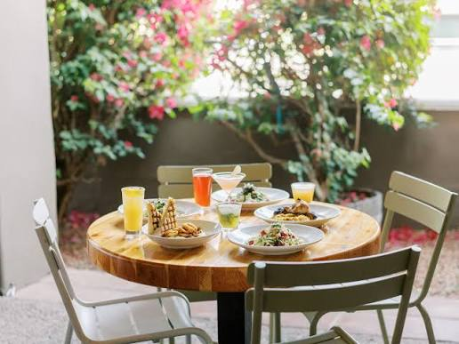
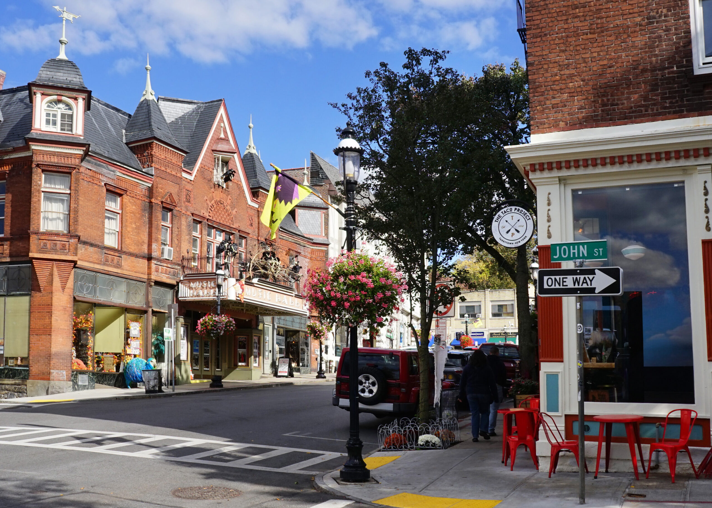

Saturday · noon till five · on the Hudson
the Hudson, opening up wide just past Tarrytown
Before we pull out
Gas topped up, phone on the mount, a playlist queued, water and a snack in the back, ten dollars for parking, a light jacket each. Weather's cloudy with a little morning rain, so we stay cozy and indoors while it's wet, and save the walking for the bright part of the afternoon.
about thirty calm minutes up the parkway · stay right, settle in
124 Wildey Street · breakfast all day, vegan-friendly through and through

My pick for you: casual, warm, and actually easy to order at. The menu marks everything V for vegan and VP for vegan-possible, so nothing's a guessing game. I'm thinking the tofu scramble or the vegan "egg" sandwich, the crispy buffalo cauliflower bowl, the BBQ "chicken" bowl, and a smoothie to split. Park right on Wildey or the town lot, steps away. If you'd rather sit down longer, Sweet Grass Grill on Main does brunch till four.
leave the car, Main Street's just around the corner
old downtown Tarrytown · coffee, little shops, no agenda

A proper break from the wheel. We'll just walk, duck into shops, get a coffee, not rush a single thing. This is the part that makes it a day out and not a drive to a parking lot. If we want something sweet, Mint Premium Foods is right on Main.
a five-minute roll south down Broadway · 1.5 miles, all calm
635 South Broadway · a Gothic castle on the bluff
A genuine Gothic Revival castle on sixty-seven acres above the river, absurdly pretty, and made for slow walking and too many photos of each other. We'll skip the indoor tour and just take the grounds; grab a daily grounds pass and roam. Parking's on-site off South Broadway.
eight minutes north through Sleepy Hollow · a couple of turns, no highway
Kingsland Point Park · the 1883 light on the water
We park at Kingsland Point and walk the RiverWalk south, about ten minutes to the little 1883 lighthouse, the bridge framing the whole Hudson behind it. This is the postcard. Stand close, take the picture, stay a while. Park's open till dusk; about ten dollars, restrooms by the lot.
we point the car home around five, the whole bright evening still ahead
Food, a town, a castle, a lighthouse, the wide blue river. Manhattan can wait.
see you Saturday, Sobika ♡ wear comfy shoes